Last updated: 2026-02-12
Checks: 6 1
Knit directory: DiffDriver-PAPER/
This reproducible R Markdown analysis was created with workflowr (version 1.7.1). The Checks tab describes the reproducibility checks that were applied when the results were created. The Past versions tab lists the development history.
Great! Since the R Markdown file has been committed to the Git repository, you know the exact version of the code that produced these results.
Great job! The global environment was empty. Objects defined in the global environment can affect the analysis in your R Markdown file in unknown ways. For reproduciblity it’s best to always run the code in an empty environment.
The command set.seed(20260206) was run prior to running
the code in the R Markdown file. Setting a seed ensures that any results
that rely on randomness, e.g. subsampling or permutations, are
reproducible.
Great job! Recording the operating system, R version, and package versions is critical for reproducibility.
Nice! There were no cached chunks for this analysis, so you can be confident that you successfully produced the results during this run.
Using absolute paths to the files within your workflowr project makes it difficult for you and others to run your code on a different machine. Change the absolute path(s) below to the suggested relative path(s) to make your code more reproducible.
| absolute | relative |
|---|---|
| /dartfs/rc/lab/S/Szhao/qiruiz/DiffDriver-PAPER/data/realdata/coding_data_03212024.txt | data/realdata/coding_data_03212024.txt |
Great! You are using Git for version control. Tracking code development and connecting the code version to the results is critical for reproducibility.
The results in this page were generated with repository version 92fca54. See the Past versions tab to see a history of the changes made to the R Markdown and HTML files.
Note that you need to be careful to ensure that all relevant files for
the analysis have been committed to Git prior to generating the results
(you can use wflow_publish or
wflow_git_commit). workflowr only checks the R Markdown
file, but you know if there are other scripts or data files that it
depends on. Below is the status of the Git repository when the results
were generated:
Ignored files:
Ignored: .Rhistory
Ignored: .Rproj.user/
Untracked files:
Untracked: LICENSE
Untracked: data/realdata/
Untracked: data/tsgsimple_LUAD_fixed_63/
Untracked: output/Clinical.csv
Untracked: output/all_diffdriver_genes.txt
Untracked: output/barplot-GO-bio-age.pdf
Untracked: output/barplot-GO-bio-age.png
Untracked: output/barplot-GO-bio-ins.pdf
Untracked: output/barplot-GO-bio-ins.png
Untracked: output/barplot-GO-bio-tmb.pdf
Untracked: output/barplot-GO-bio-tmb.png
Untracked: output/barplot-KEGG-ins.pdf
Untracked: output/barplot-KEGG-tmb.pdf
Unstaged changes:
Modified: DiffDriver-PAPER.Rproj
Modified: analysis/_site.yml
Note that any generated files, e.g. HTML, png, CSS, etc., are not included in this status report because it is ok for generated content to have uncommitted changes.
These are the previous versions of the repository in which changes were
made to the R Markdown (analysis/BMR.Rmd) and HTML
(docs/BMR.html) files. If you’ve configured a remote Git
repository (see ?wflow_git_remote), click on the hyperlinks
in the table below to view the files as they were in that past version.
| File | Version | Author | Date | Message |
|---|---|---|---|---|
| Rmd | 92fca54 | Qirui Zhang | 2026-02-12 | rebuild |
| html | df72d55 | Qirui Zhang | 2026-02-07 | Build site. |
| Rmd | 3d2e0bb | Qirui Zhang | 2026-02-07 | Initial version of DiffDriver project |
The regular and signature models are compared through the prediction
of mutation number in chromosome seq(1,22,2) based on the
bmr computed from chromosome seq(2,22,2).
For regular model, the formula for bmr is
regmtx=matrix(colSums(ymatrix)/numberNttype,ncol=1)
weight=matrix(rowSums(ymatrix)/sum(ymatrix),ncol=1)
regmtx1=weight%*%t(regmtx)
For signature model, the formula for bmr is
fit =fastTopics::fit_topic_model(yymatrix, k = k)
lltemp = fit$L fftemp = fit$F
ff = matrix(min(fftemp)/2, nrow = totalnttype, ncol = k )
ff[as.numeric(rownames(fftemp)), ] <- fftemp
ll = matrix(rep(colMeans(lltemp), nsample), nrow = nsample, byrow =T)
rownames(ll) <- id
ll[rownames(lltemp),] <- lltemp
colnames(ll)=paste("weight",1:k, sep = "")
colnames(ff)=paste("factor",1:k,sep="")
ff=cbind(sigmapping[,c("context","alt_allele")],ff)
sigmtx=ll%*%t(ff[,-c(1,2)]) # rows are samples, column is nttypecode
load("data/realdata/ntcode_conversion.Rd")
name=ntcode_conversion$name
key=paste0(substr(name,1,3),",",substr(name,6,6))
ntcode_conversion[,1]=key
code=read.table(file = "/dartfs/rc/lab/S/Szhao/qiruiz/DiffDriver-PAPER/data/realdata/coding_data_03212024.txt", header=T)
for (i in 1:nrow(ntcode_conversion)) {
index=which(code$Key==ntcode_conversion$name[i])
ntcode_conversion$code[i]=code$Value[index]
}
bridge=unique(ntcode_conversion[order(ntcode_conversion$code),c(2,4)])
rownames(bridge)=c()load("data/realdata/resultsRegular9.Rd")
results9=results[-16]
load("data/realdata/resultsRegular96.Rd")
results96=results
load("data/realdata/resultsSignature_newanno.Rd")
results1=results
numberNttype=results1$BLCA$chr2$numberNttype[-c(93,94,95,96)]
rm(list="results")
nn2=names(results9)
par(mfrow=c(1,2))
par(mar = c(2, 2, 2, 2))
type=c(1:3,5,7:51,54:96)
index1=bridge[type,2]
for (j in c(1:19)) {
resultsSig9=results9[[j]]
resultsSig2=results96[[j]]
bmrTr=resultsSig9$regbmrTr[,index1]
pr=c(bmrTr%*%diag(resultsSig2$numberNtTe))
#te=c(resultsSig$ymatrixTe)
resultsSig=results1[[j]]
bmr=resultsSig$bmr
ymTe=resultsSig$ymatrixTe[,-c(4,6,52,53)]
te=c(ymTe)
dd1=round(cor(pr,te),3)
plot(pr,te,xlim = c(0,max(te,pr)),ylim = c(0,max(te,pr)),col= "white", bg = colors[3], pch = 21, bty = "n", xlab = "Predicted", ylab = "Observed")
grid(col = "lightgray", lty = "dotted")
abline(a=0,b=1)
title(paste0("Reg-indirect: ",nn2[j],": ",dd1))
# pr=c(resultsSig2$regbmrTr%*%diag(resultsSig2$numberNtTe))
# te=c(resultsSig2$ymatrixTe)
# plot(pr,te,xlim = c(0,max(te,pr)),ylim = c(0,max(te,pr)),col=colors[3])
# abline(a=0,b=1)
# tt1=round(cor(pr,te),3)
# title(paste0("Reg-direct: ",nn2[j],": ",tt1))
resultsSig=results1[[j]]
bmr=resultsSig$bmr
ymTe=resultsSig$ymatrixTe[,-c(4,6,52,53)]
sigbmr=c()
for (i in 1:96) {
index=which(bmr$nttypecode==i)
ibmr=exp(bmr[index,-c(1,2)])
aa=apply(ibmr,2,median)
sigbmr=cbind(sigbmr,aa)
}
sigbmr1=sigbmr
colnames(sigbmr1)=1:96
sigbmr1=sigbmr1[,-c(4,6,52,53)]
pp1=c(sigbmr1%*%diag(numberNttype))
Te1=c(ymTe)
dd1=round(sum((pp1-Te1)^2)/length(Te1),2)
plot(pp1,Te1,xlim = c(0,max(pp1,Te1)),ylim = c(0,max(pp1,Te1)), col= "white", bg = colors[2], pch = 21, bty = "n", xlab = "Predicted", ylab = "Observed")
grid(col = "lightgray", lty = "dotted")
abline(a=0,b=1)
tt1=round(cor(Te1,pp1),3)
title(paste0("Signature: ",nn2[j],":",tt1))
}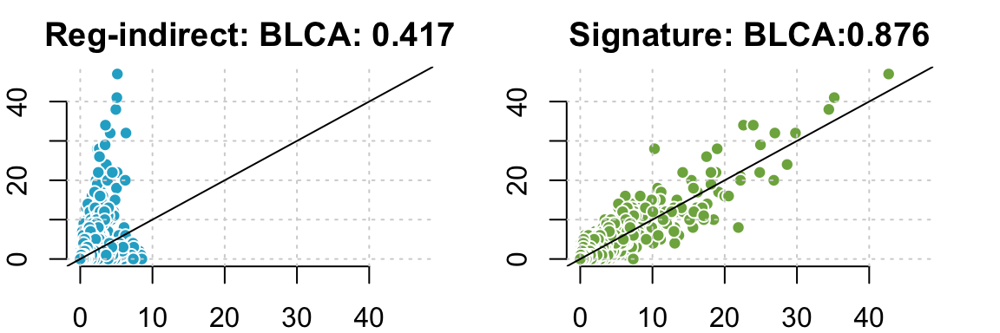
| Version | Author | Date |
|---|---|---|
| df72d55 | Qirui Zhang | 2026-02-07 |
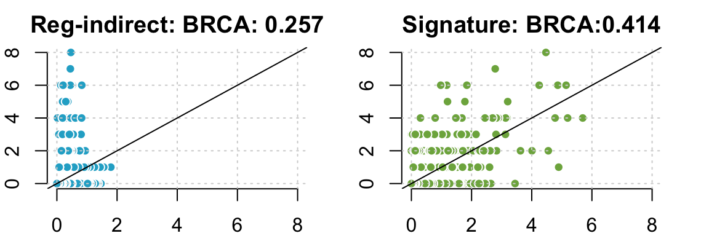
| Version | Author | Date |
|---|---|---|
| df72d55 | Qirui Zhang | 2026-02-07 |
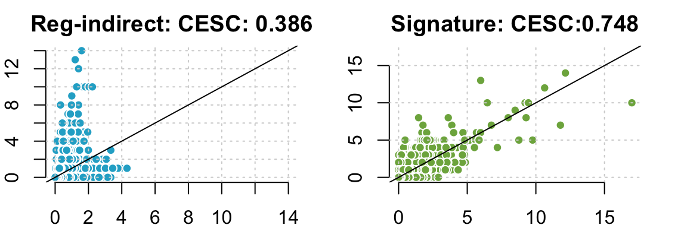
| Version | Author | Date |
|---|---|---|
| df72d55 | Qirui Zhang | 2026-02-07 |
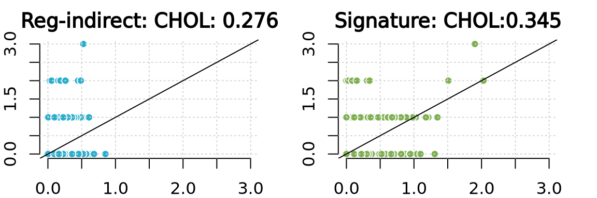
| Version | Author | Date |
|---|---|---|
| df72d55 | Qirui Zhang | 2026-02-07 |
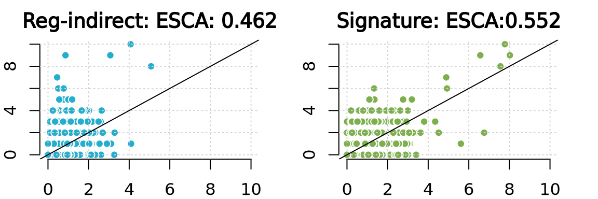
| Version | Author | Date |
|---|---|---|
| df72d55 | Qirui Zhang | 2026-02-07 |
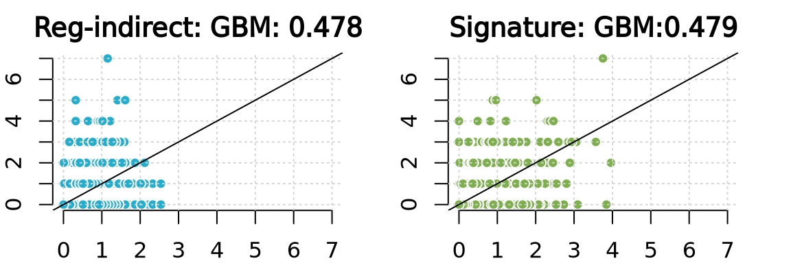
| Version | Author | Date |
|---|---|---|
| df72d55 | Qirui Zhang | 2026-02-07 |
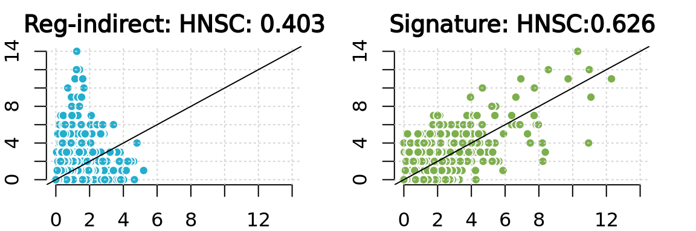
| Version | Author | Date |
|---|---|---|
| df72d55 | Qirui Zhang | 2026-02-07 |
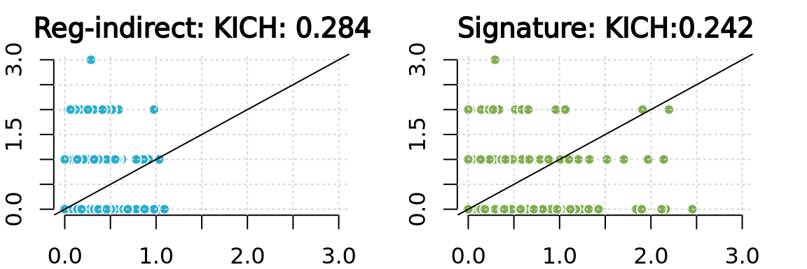
| Version | Author | Date |
|---|---|---|
| df72d55 | Qirui Zhang | 2026-02-07 |
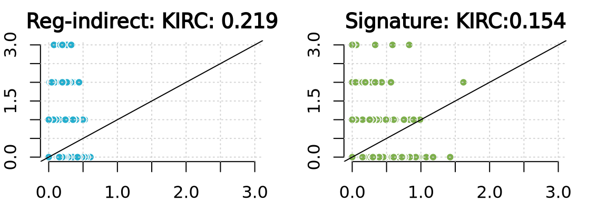
| Version | Author | Date |
|---|---|---|
| df72d55 | Qirui Zhang | 2026-02-07 |
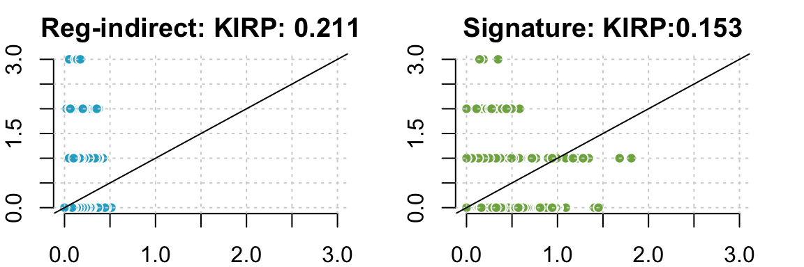
| Version | Author | Date |
|---|---|---|
| df72d55 | Qirui Zhang | 2026-02-07 |
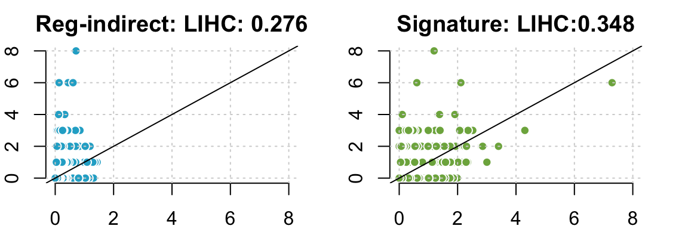
| Version | Author | Date |
|---|---|---|
| df72d55 | Qirui Zhang | 2026-02-07 |
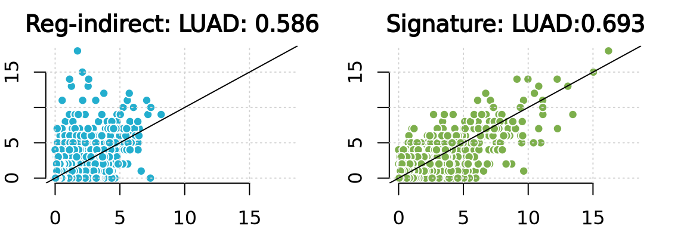
| Version | Author | Date |
|---|---|---|
| df72d55 | Qirui Zhang | 2026-02-07 |
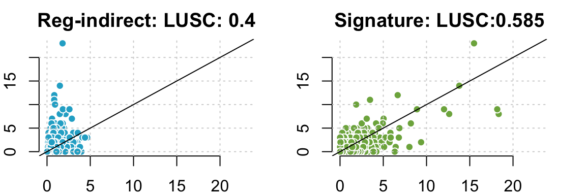
| Version | Author | Date |
|---|---|---|
| df72d55 | Qirui Zhang | 2026-02-07 |
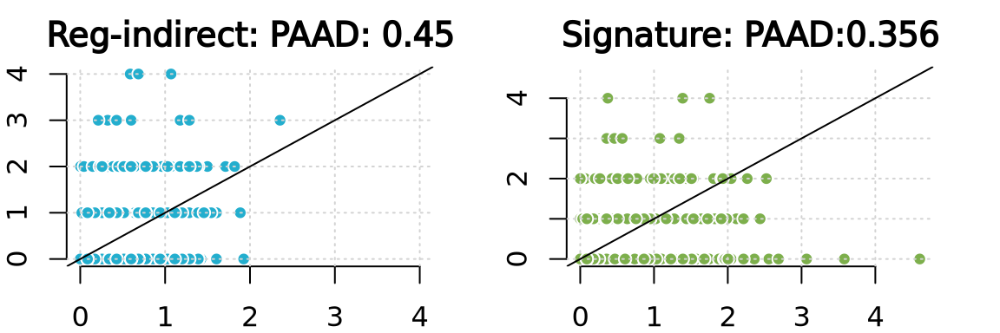
| Version | Author | Date |
|---|---|---|
| df72d55 | Qirui Zhang | 2026-02-07 |
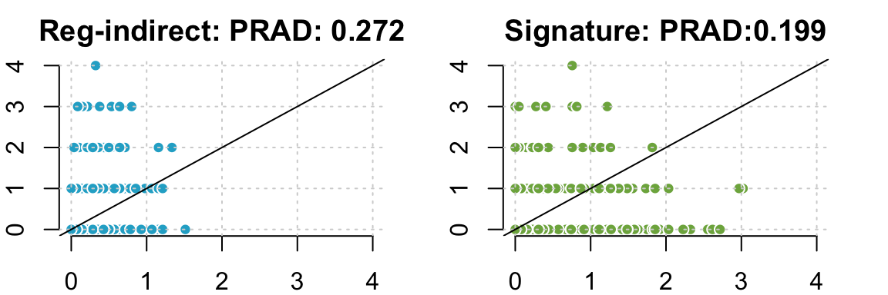
| Version | Author | Date |
|---|---|---|
| df72d55 | Qirui Zhang | 2026-02-07 |
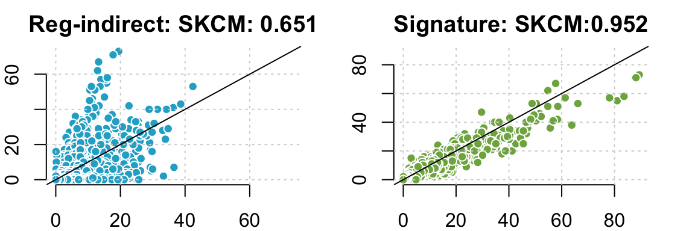
| Version | Author | Date |
|---|---|---|
| df72d55 | Qirui Zhang | 2026-02-07 |
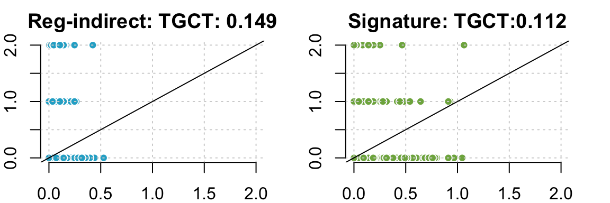
| Version | Author | Date |
|---|---|---|
| df72d55 | Qirui Zhang | 2026-02-07 |
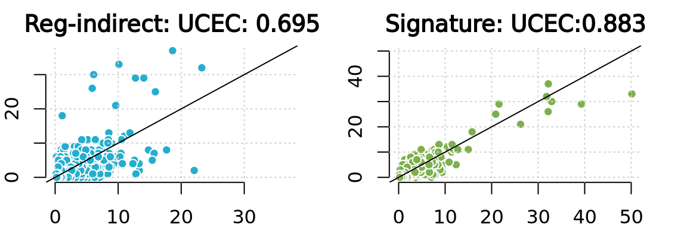
| Version | Author | Date |
|---|---|---|
| df72d55 | Qirui Zhang | 2026-02-07 |
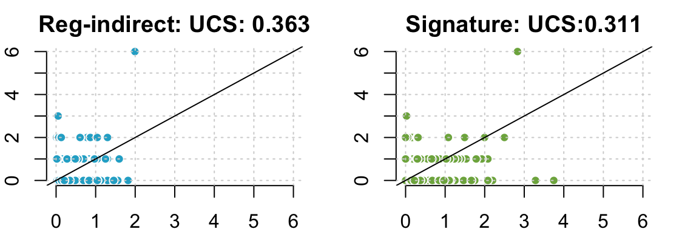
| Version | Author | Date |
|---|---|---|
| df72d55 | Qirui Zhang | 2026-02-07 |
R version 4.4.2 (2024-10-31)
Platform: x86_64-conda-linux-gnu
Running under: Ubuntu 24.04.1 LTS
Matrix products: default
BLAS/LAPACK: /dartfs-hpc/rc/home/p/f0070pp/.conda/envs/diffdriver/lib/libopenblasp-r0.3.29.so; LAPACK version 3.12.0
locale:
[1] LC_CTYPE=en_US.UTF-8 LC_NUMERIC=C
[3] LC_TIME=en_US.UTF-8 LC_COLLATE=en_US.UTF-8
[5] LC_MONETARY=en_US.UTF-8 LC_MESSAGES=en_US.UTF-8
[7] LC_PAPER=en_US.UTF-8 LC_NAME=C
[9] LC_ADDRESS=C LC_TELEPHONE=C
[11] LC_MEASUREMENT=en_US.UTF-8 LC_IDENTIFICATION=C
time zone: Etc/UTC
tzcode source: system (glibc)
attached base packages:
[1] stats graphics grDevices utils datasets methods base
other attached packages:
[1] RColorBrewer_1.1-3 workflowr_1.7.1
loaded via a namespace (and not attached):
[1] vctrs_0.6.5 httr_1.4.7 cli_3.6.5 knitr_1.50
[5] rlang_1.1.6 xfun_0.52 stringi_1.8.7 processx_3.8.6
[9] promises_1.3.3 jsonlite_2.0.0 glue_1.8.0 rprojroot_2.0.4
[13] git2r_0.36.2 htmltools_0.5.8.1 httpuv_1.6.16 ps_1.9.1
[17] sass_0.4.10 rmarkdown_2.29 jquerylib_0.1.4 tibble_3.2.1
[21] evaluate_1.0.3 fastmap_1.2.0 yaml_2.3.10 lifecycle_1.0.4
[25] whisker_0.4.1 stringr_1.5.1 compiler_4.4.2 fs_1.6.6
[29] pkgconfig_2.0.3 Rcpp_1.0.14 rstudioapi_0.17.1 later_1.4.2
[33] digest_0.6.37 R6_2.6.1 pillar_1.10.2 callr_3.7.6
[37] magrittr_2.0.3 bslib_0.9.0 tools_4.4.2 cachem_1.1.0
[41] getPass_0.2-4